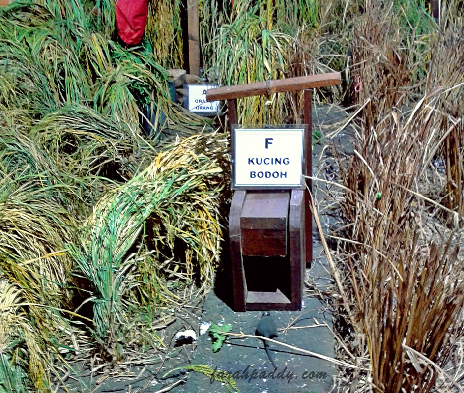
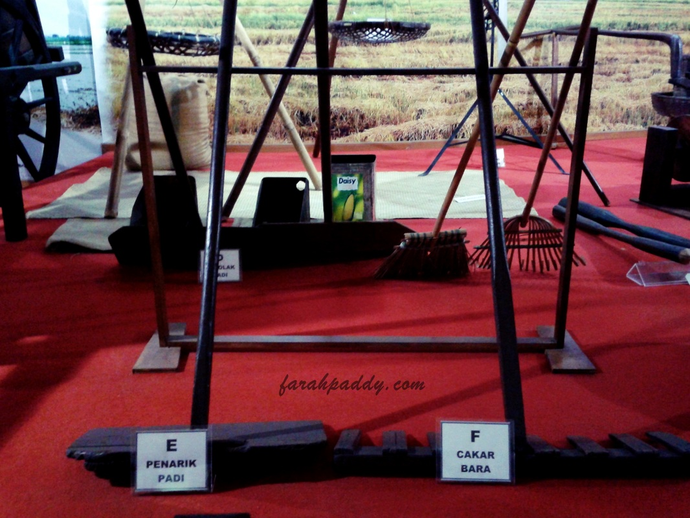
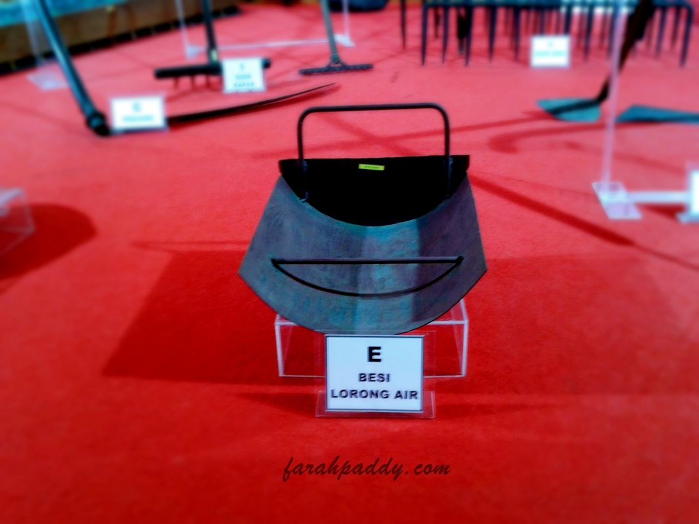
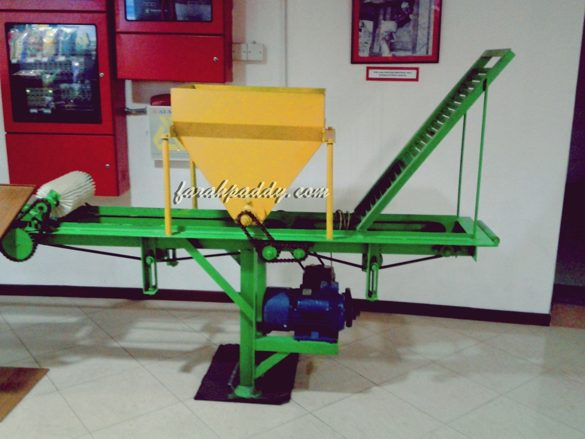
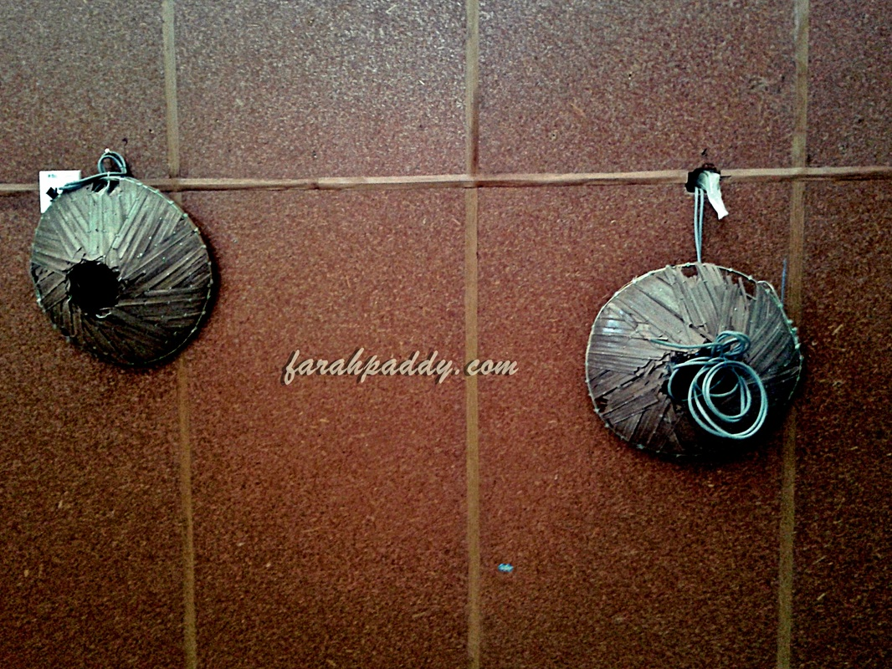
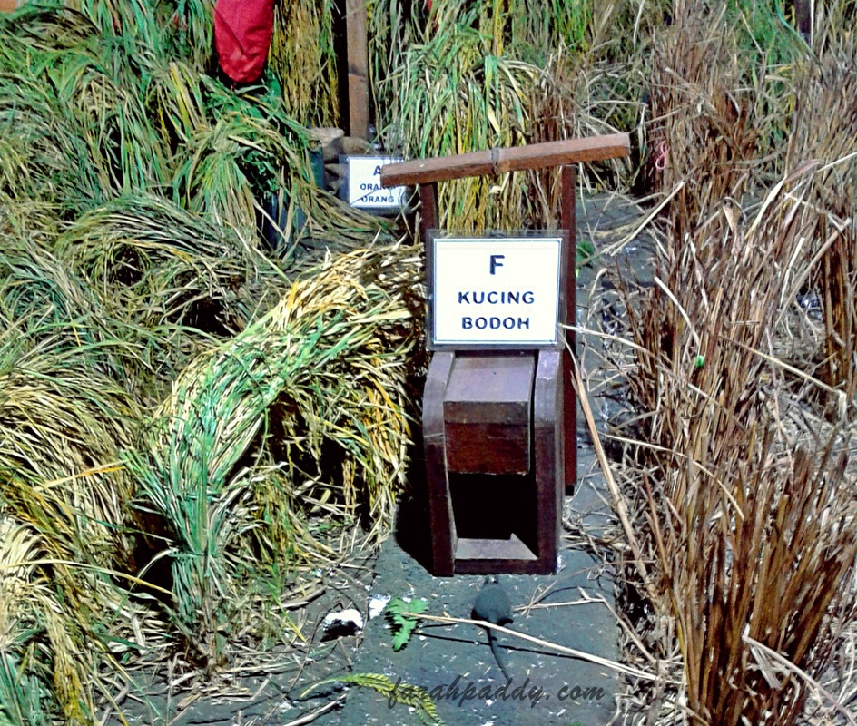
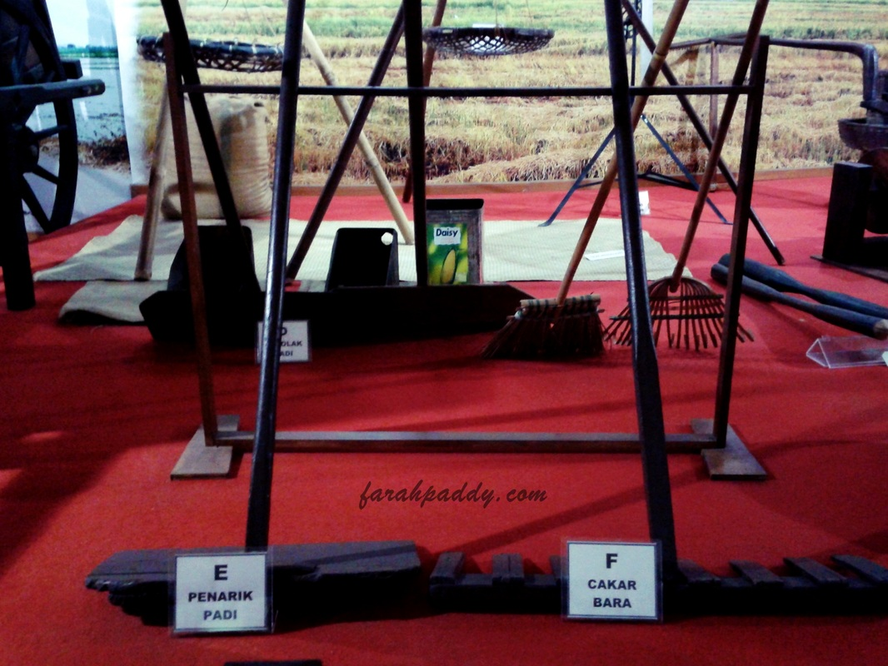
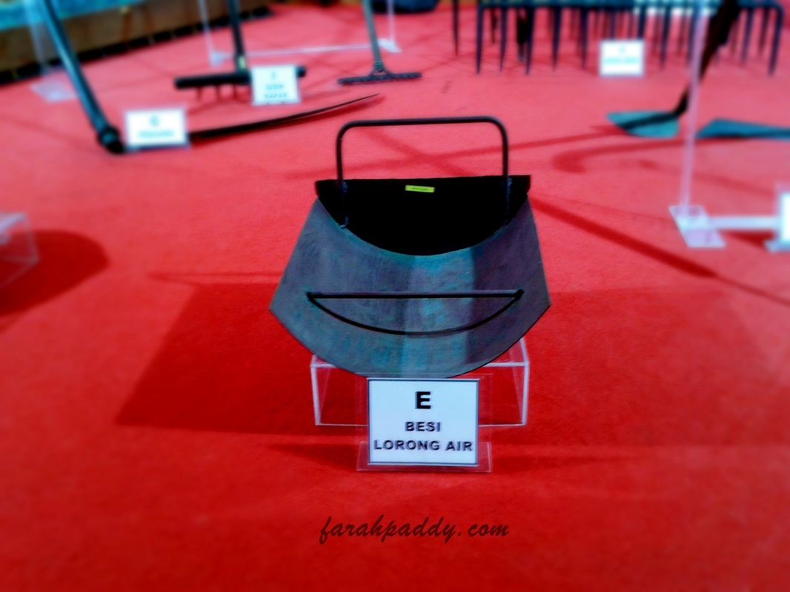
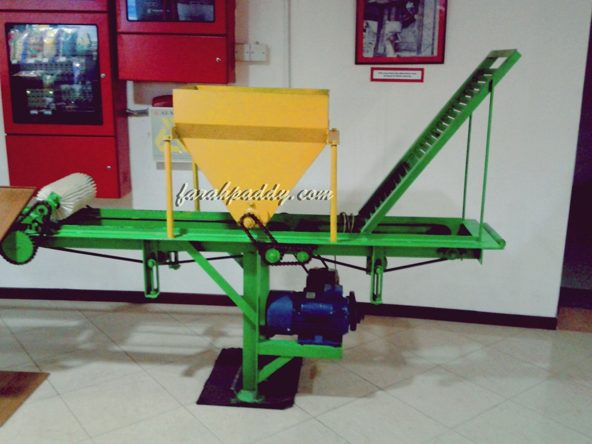
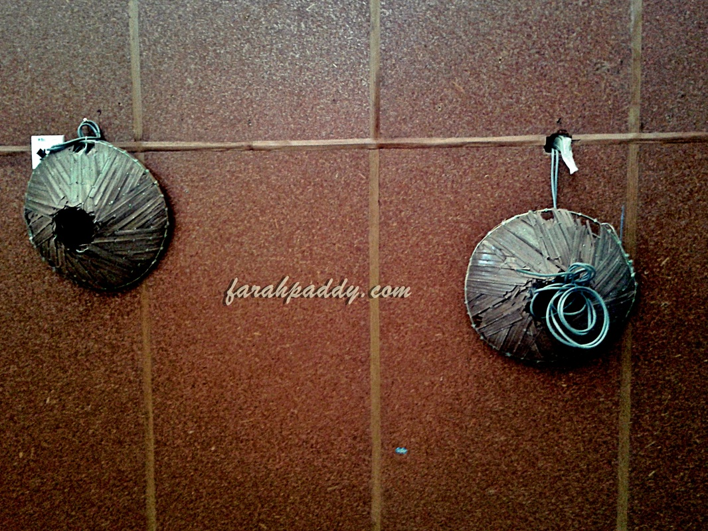

Aras 1: Galeri Peralatan Pertanian
موزيوم ڤادي
Di aras ini pengunjung berpeluang mengetahui sejarah penanaman padi di Kedah, meninjau koleksi variati - variati padi dan melihat alatan-alatan pesawahan tradisional seperti anak, renggam, kapok, tenggiling dan lain-lain. Bagi yang ingin mencuba pengalaman baru, belehlah belajar memekul (membanting) padi adan menunmbuk padi di sini. Untuk penggemar ikan, boleh juga melihat alat-alat menangkap ikan yang hampir pupus antaranya sepila, tuar, bubu, serta tankul disamping boleh mengenali ikan-ikan seperti sepat, puyu, haruan, keli dan bermacam-macam lagi.
 








